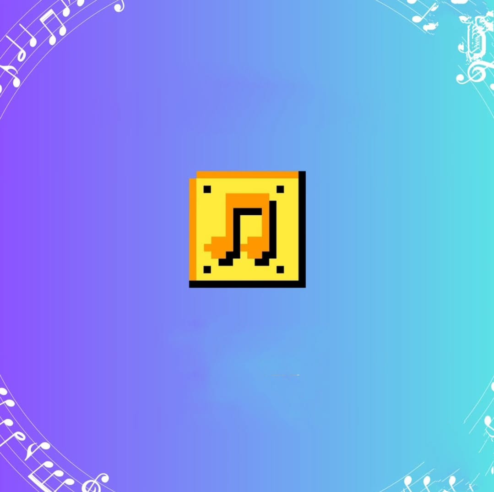
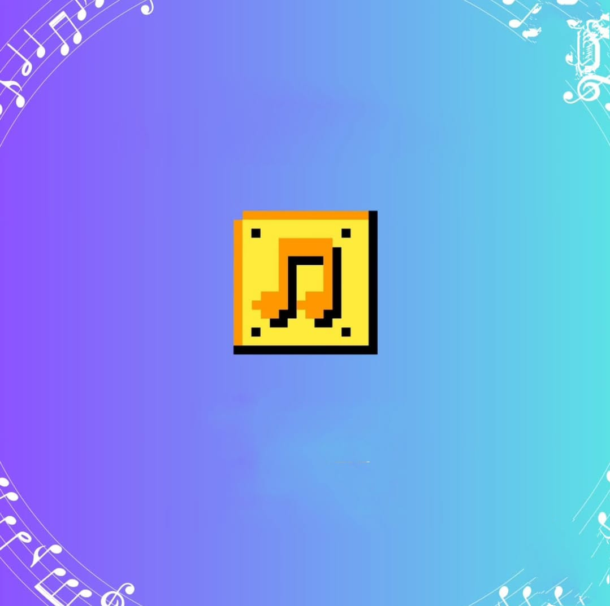

Quem somos
A Gamelodic oferece workshops online práticos para desenvolver habilidades musicais do nível iniciante ao intermediário, com foco na criação de trilhas sonoras para jogos. Nosso objetivo é capacitar os alunos a compor músicas que melhorem a experiência dos jogadores, aplicando técnicas e ferramentas da indústria musical. A metodologia é totalmente prática, com workshops dedicados ao ensino de teoria musical, violão, saxofone alto, violino, guitarra e contrabaixo, além das habilidades de composição para trilhas sonoras de games. Os alunos aprenderão a dominar esses instrumentos e a aplicar esses conhecimentos musicais na criação de músicas adaptadas a diferentes estilos de jogos.